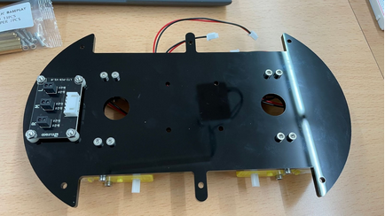

1.Coloque los soportes de los motores.
2.Coloque los motores en la base inferior.

3.Coloque el line-tracking module a la base inferior.
4.Coloque el expansion board a la placa arduino (UNO).
5.Coloque la expansion board junto a la arduino (UNO) en la base superior.
6.Coloque la bateria en la parte superior de la base.
7.Coloque el modulo de la camara en su respectivo soporte.
8.Coloque el sensor ultrasonico en su respectivo soporte.
9.Coloque el modulo de la camara con su soporte junto al sensor ultrasonico y su soporte a la parte superior de la base.
10.Coloque el cableado en sus respectivos puertos.
11.Coloque los respectivos tornillos para acoplar las base superior con la inferior.
12.Acopla las ruedas en los motores.